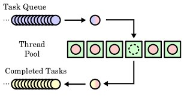
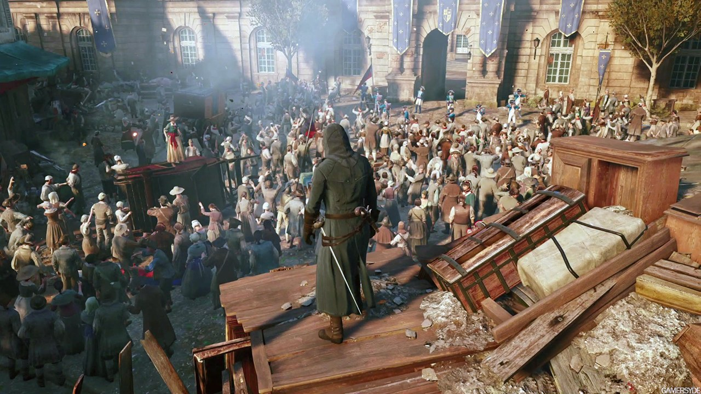
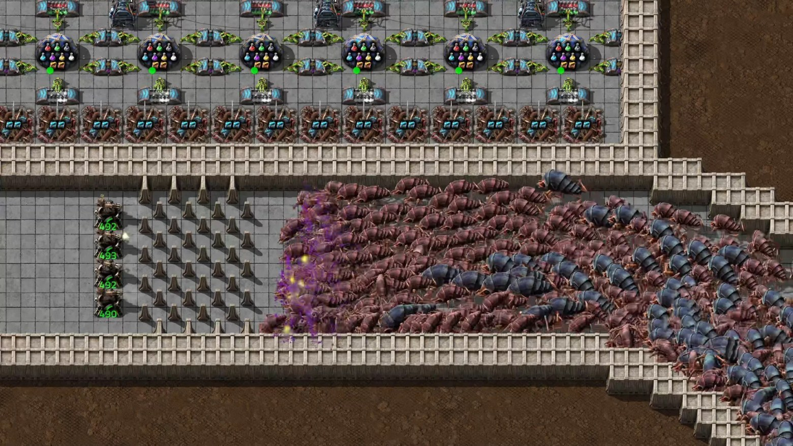
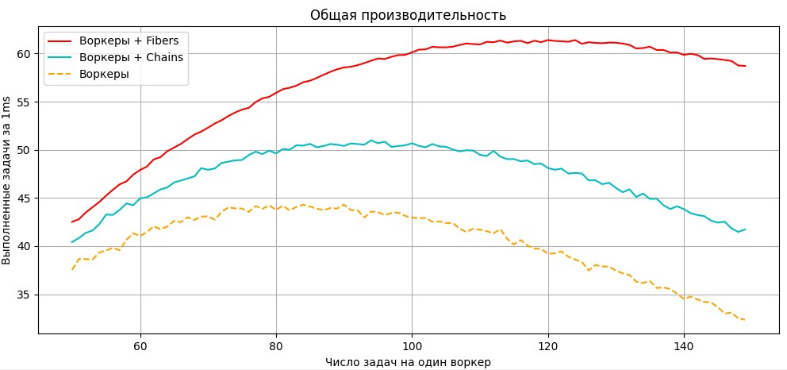
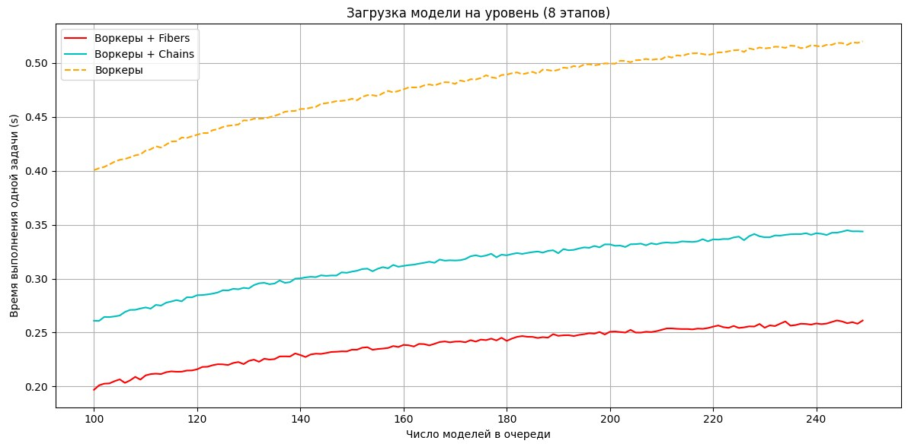

Concurrent systems play a key role in games — from updating AI behavior and physics to rendering and loading resources. Different concurrency models let you organize the work of threads in different ways, distributing tasks and defining how threads interact to achieve a common goal. The right model affects not only performance, but often the stability of the game.
The execution models used vary — from simple multithreading with manual synchronization to more advanced actor systems, job-based approaches or a task graph. For example, AI behavior systems can update in parallel with physics while the main thread handles rendering. Some engines, such as Unreal Engine, use a task graph where the dependencies between tasks are expressed explicitly and the tasks are automatically distributed across the available cores. Other approaches, like in CryEngine Perth (an ECS analog, a task matrix), let you organize data to minimize false dependencies and improve cache efficiency. The final choice always depends on the engine architecture, the platform and the requirements of the specific task or group of tasks.
This is part of the "Game++" series:
Game++. Work hard <=== You are here
The concurrency models used in games largely resemble the architectures of distributed systems — physics, AI, audio, animation, rendering — are often executed in separate threads that must interact efficiently with each other. This is very similar to how different processes exchange data in distributed systems, except that in the case of games everything happens within a single device and is bounded by a few frames.
Threads in games and tasks in distributed systems have a similar nature, so the parallel-execution models in games often echo their older brothers. And although games often don't depend on a network connection, the role of such failures is played, for example, by CPU or GPU throttling, memory errors, problems with disk access. And when one system (for example, the texture-loading thread) hangs or allocates too many resources, it affects the whole game. That's exactly why most conditionally "big" games use task systems and dependency graphs that resemble load-balancing and fault-tolerance models from distributed systems.
And with the arrival of a concept like balancing come ideas like idempotency (the ability to safely re-run a task), fail-over (switching to backup logic), task logging, prioritization and even load distribution — all of this migrated into game frameworks, especially in large projects and on consoles, where predictability and stability are now no less important than performance. And in meetings you can quite easily hear an argument about whether you can give up 5 FPS but load more content into the scene, or add NPCs and logic.
Shared state
Thread ==================| |==================| |===
| State | | State |
Thread ==================| |==================| |===One of the key questions is whether the threads will share a common state (shared state) or each thread will have its own copy (separate state).
In the case of shared state, for example if several systems (physics, AI, animation) access the same game-world objects at the same time, we run into the typical problems of multithreading: data races, deadlocks and false dependencies.
The AI logic updates a unit's position at the same time as the physics engine — which of them can you trust? To prevent such situations you have to use mutexes, atomics or other synchronization mechanisms that will slow down execution.
Separate state
Thread ==================[State]==================[State]===
Thread ==================[State]==================[State]===In contrast, separate state is used in systems such as job systems or ECS (Entity-Component-System), where each thread works on its own chunk of data: one thread updates only positions, another — only rotations, and they don't overlap on data. This approach increases code and system complexity (the understandability of the system), but lets you scale onto modern CPUs with a large number of cores, reduce the synchronization overhead and increase the overall performance of the game.
Separate state means that different threads don't share data with each other — each works only with its own set of objects, properties or parameters. If threads need to exchange information, it's done either through immutable objects or through copies of the data, which excludes simultaneous writing to the same memory region and reduces the risk of typical multithreading problems like races.
For example, in job-based systems each thread gets its own job and its own chunk of game state — a unit, a component or data — that doesn't require synchronization. All these solutions eventually led engine developers to multithreaded rendering — where threads can assemble rendering commands independently of each other, after which the main thread sends everything to the GPU. This allowed building super-efficient systems like idTech5 and fully using the resources of modern CPUs/GPUs, but it also made the architecture of such games fragile, barely predictable and hard to debug with ordinary tools. Fragile in the sense that idTech's renderer is no good for anything other than the Doom it was written for.
Shadow state
Thread ==================[State->State1]===========[State1]===
Thread ==================[State]===================[State1]===An approach to organizing multithreading in which each thread works with its own local copy of the shared state until the first change. Instead of interacting directly with the "live" data, the thread gets a snapshot — a so-called "shadow copy" — which it can safely work with, without worrying about synchronization. After all operations are finished, the changes are aggregated and, as a rule, merged back into the main state at the next stage, often in a strictly controlled phase, for example at the end of the frame.
It's used in AI, simulation and animation-preparation systems, where each thread processes agent behavior or calculations based on the state that was current at the start of the frame — all workers get a consistent view of the world.
Another example: the copy has some shared flag, based on a fast atomic, that says the data was changed in another thread and needs to be updated. If the thread has already started working on the data, it continues, but if there's an opportunity to update it, the current state is taken.
Workers
+--------------------------------------+
| Data |
+--------------------------------------+
/\ /\ /\
|| || ||
\/ \/ \/
+----------+ +----------+ +----------+
| | | | | |
| Worker | | Worker | | Worker |
| | | | | |
+----------+ +----------+ +----------+
^ ^ ^
| | |
+------------+ | | |
| | | | |
| Pool |----------+---------------+-------------+---->
| |
+------------+The first concurrency model implemented in an engine is usually parallel tasks. Jobs are distributed among various worker threads. Each worker performs a task in full, they run on different threads and possibly on different processors, and the tasks don't know about the existence of other tasks.
If you look at this model in the real world, it's like assembling a wardrobe in an apartment: the assembler gets a booklet of instructions and assembles the wardrobe from the base to the door handles. The model is simple, and that's why it's used most often in games.
The advantages of workers are that, first, they're understandable, and second — they scale easily, you just need to add more processing threads. It lets you regulate the intensity of computations, physics simulation or rendering. To determine how many workers are enough for the game, you can easily test iterations with different thread counts and see which number gives the highest performance.
There are plenty of drawbacks too, and they're significant enough to move on to other models. If the workers need access to shared data, be it memory or the GPU, the cost of synchronization can eat up the entire time gain from splitting into tasks, or even become a significant burden and a cause of unexpected behavior.
As soon as shared data creeps into the worker model — and 99% of the time it will, like object state, level info and so on — everything becomes more complicated. This means that changes to this data must be written back to main memory, not stay only in the cache of the processor running this thread, which, as you understand, significantly reduces overall performance. Since game objects, physics, animations and AI often require synchronization between several systems, in the end this leads to:
Race conditions: two threads try to change the same variable at the same time (for example a character's health or an object's position) and an undefined state arises.
Deadlocks: threads try to lock several resources in a different order and get stuck waiting for each other. One thread locks the physics data, another — the game-state data, and both will wait for the locks to be released, which leads to a hang.
Oversync: several threads synchronize with each other too often, which leads to extra synchronization overhead and slows down the game.
The basic, simple solution for all types of such systems is an implementation based on a queue + thread combo in the form of a thread pool.
class thread_pool_t
{
public:
thread_pool_t(std::size_t n_threads)
{
for (std::size_t i = 0; i < n_threads; ++i)
{
_threads.push_back(make_thread_handler(_queue));
}
}
~thread_pool_t()
{
// Task = {Execute/Stop, function, args}
Task const stop_task{TaskType::Stop, {}, {}};
for (std::size_t i = 0; i < _threads.size(); ++i)
{
push(stop_task);
}
}
bool push(Task const& task)
{
_queue.push(task);
return true;
}
private:
std::queue<Task> _queue;
std::vector<std::jthread> _threads;
}A ready-to-use implementation of such a system can be found here, here or here. For a game, using a worker system is no harder than calling a function. Like this
int the_answer()
{
return 42;
}
int main()
{
thread_pool workers;
std::future<int> my_future = workers.submit_task(the_answer);
std::cout << my_future.get() << '\n';
}or like this
int main()
{
const std::future<void> my_future = pool.submit_task([]
{
std::this_thread::sleep_for(std::chrono::milliseconds(500));
});
std::cout << "Waiting for the task to complete... ";
my_future.wait();
std::cout << "Done." << '\n';
}Stateless workers
+--------------------------------------+
| Data |
+--------------------------------------+
|| || ||
\/ \/ \/
+----------+ +----------+ +----------+
| | | | | |
| Worker | | Worker | | Worker |
| | | | | |
+----------+ +----------+ +----------+
^ ^ ^
| | |
+------------+ | | |
| | | | |
| Pool |---------+---------------+-------------+---->
| |
+------------+The worker model has an interesting variant where the worker re-reads the state as needed to make sure it's working with a current copy, instead of keeping the state inside itself.
This model becomes effective when most systems that process shared data work in read mode or with a one-frame delay. Only the physics engine updates the positions of objects in the world, while the AI uses this data to make decisions and sends new states at the end of the frame. This approach has been used in the Assassin's Creed series since the very beginning of the series, which lets it process a huge crowd of actors on very modest hardware.

The "stateless" approach of handlers that always re-read the current state is preferable, since it reduces the risk of working with stale data and helps avoid complex synchronization problems. Reading data conditionally "costs nothing" compared to using mutexes, but such a model isn't always and everywhere suitable.
Another no less well-known game that uses the stateless workers approach is Factorio. The author described the implementation of this system in detail on his blog, in order to be able to process the movement of crowds of 3–4k units on the map, and of course not only units.

Workers chain
The second model that's widely used in games is what I call chains. The name was chosen to keep the analogy with the "worker assembling a wardrobe." Here our wardrobe is split into two parts — the bottom and the top — and the workers assemble them one after another; you can't assemble the top without the bottom being assembled, you can't decompress a texture without loading it from disk, but loading and decompressing together take a long time and take resources away from the frame.
+----------+ +----------+ +----------+
| | | | | |
+--->| Worker |->| Base | | Top |
| | | | | | |
| +----------+ +----------+ +----------+
| |
| +-------------+
+------------+ | +----------+ +----------+ +---\|/----+
| | | | | | | | |
| Pool |--+--->| Worker |->| Base | | Top |
| | | | | | | |
+------------+ +----------+ +----------+ +----------+Using such a model lets you do non-blocking IO, i.e. when such an operation begins (for example reading a texture file, decompression, uploading to the GPU), the thread doesn't have to wait for it to finish. IO operations are, as a rule, slow, and waiting for them to finish is just a waste of CPU time. When such an operation finishes, its result is handed to a free worker from the pool. And the more such subtasks you can carve out of a long task, the more efficiently you'll use the CPU's resources, the fewer delays there will be on texture loading. Instead of loading all the textures at once and hanging the frame for several seconds (a freeze), we stretch this time out, splitting the loading into small parts. Yes, at some point the player may see a couple of blurry textures that are still in the process of loading, but in exchange there's a stable and high FPS, not the freezes and lags everyone is used to chalking up to clumsy hands.
This is perhaps similar to the previous one, but such a model fits poorly onto a chaotic selection of tasks — there's no guarantee the task will be picked up right away, no guarantee the budget will be enough to complete it.
Most often such a model is used (but isn't limited only to it) for the asynchronous loading of resources — levels, textures, models, animations — and workers are allocated by the number of possible stages of the task. One thread can decompress the file header, hand the data to a thread that loads it from disk, then — to a thread that processes and places the resources in GPU memory. Moreover, thanks to the fact that we know the stages the task had to be split into, it can be moved around within the frame time so as not to disturb the main game thread responsible for the core logic and rendering.
Usually at the end of the frame, before the data goes to the GPU, we have free threads left that can be temporarily turned into such "chains" and load resources when we know for sure that we're not disturbing the game.
[ Main Game Thread ]
|
[ End of Frame ]
|
+---------------+----------------+
| |
[Worker Thread 1] [Worker Thread 2]
Stage 1: Schedule Stage 1: Schedule
resource load another resource
| |
[Worker Thread 3] [Worker Thread 4]
Stage 2: Disk read Stage 2: Disk read
(non-blocking IO) (non-blocking IO)
| |
[Worker Thread 5] [Worker Thread 6]
Stage 3: Decode / Stage 3: Decode /
Decompress asset Decompress asset
| |
[Worker Thread 7] [Worker Thread 8]
Stage 4: GPU upload Stage 4: GPU upload
(enqueue commands) (enqueue commands)
| |
[Back to Main Thread / Rendering Queue]Chains have plenty of positive properties — the fact that worker threads don't share a common state with other threads means they can be implemented without worrying about the typical problems of parallel programming related to simultaneous access to shared data. This significantly simplifies their implementation; each thread can be implemented as if it were the only one doing its part of the work. This reduces code complexity, removes the need to use mutexes, locks and other synchronization tools, and accordingly makes the logic more predictable.
Since the workers don't share data, they can be stateful. That is, each thread can keep the data it needs in its own memory and not turn to external sources every time it needs to update them. The changes are moved into RAM or updated only on completion of the task.
Storing the state locally lets such a thread work faster than a stateless one (minus synchronization, minus reading data). This is especially beneficial when we have many tasks off-frame — processing AI behavior, simulating animations, planning paths and so on. In the end, chains combine the simplicity of single-threaded logic and the performance of local state, without sacrificing safety or scalability.
And how could we go without data locality? Single-threaded code has a very important advantage: it better matches the architecture of the hardware itself — the CPU is multi-core of course, but inside, the cache-core bundle, as it was designed for one thread twenty years ago, still works the same way now. If you can be sure the code runs in single-threaded mode, it becomes possible to develop optimal data structures and algorithms. There's no need to protect memory access, account for races, locks and other multithreading overhead — all this simplifies and speeds up the code.
And also, as said above, single-threaded workers with local state can efficiently use the cache for their data, which, as you understand, is orders of magnitude faster than accessing shared or even local RAM. This is called hardware conformity — knowing the fundamentals, when the code is written in such a way that it naturally uses the architectural advantages of the processor.
This approach reached its peak in the engines and games of Naughty Dog, who went all in and built their workers on fibers, i.e. inside a thread it could also cycle through several strands of separate tasks (so you got tasks with subtasks) in order to completely fill the CPU with computations and remove idle time waiting for data. At one point the PS3 implementation could have 196 active fiber-tasks, each of which was in a running state. Thanks to such tight packing, they managed to utilize 92% of the CPU, which is absolutely fantastic numbers given the hospital average of less than 50% on PlayStation games — that is, the Naughty Dog engine squeezed almost everything possible out of the PlayStation's CPU.
There are drawbacks too — the execution of a single task is often split among several worker threads, which means among different classes and modules. Because of this the classes start to look like a set of callbacks unconnected to each other, and the understanding of exactly what code runs as part of handling a specific task is offloaded to the level of data graphs. All the logic of the worker threads is moved into callback handlers, they become nested inside one another, and what game developers call "callback hell" appears — on Windows there was dll hell, and here, in the chase for CPU utilization, we built ourselves a cozy branch of hell. And for such a system, you already have to write a separate tool for orchestration and debugging.
You can see more in the GDC 2015 talk "Parallelizing the Naughty Dog Engine Using Fibers" (Christian Gyrling), which shows exactly their fiber-based task system and the tools for debugging it.
Where to look at this in code? In 2019 Nicolas Capens and Ben Clayton adapted the Naughty Dog solution and open-sourced it on GitHub. Code-wise it's all the same; the common calls are almost no different from a thread-pool implementation of workers.
int main() {
// Create a marl scheduler using all the logical processors available to the process.
// Bind this scheduler to the main thread so we can call marl::schedule()
marl::Scheduler scheduler(marl::Scheduler::Config::allCores());
scheduler.bind();
defer(scheduler.unbind()); // Automatically unbind before returning.
constexpr int numTasks = 10;
// Create an event that is manually reset.
marl::Event sayHello(marl::Event::Mode::Manual);
// Create a WaitGroup with an initial count of numTasks.
marl::WaitGroup saidHello(numTasks);
// Schedule some tasks to run asynchronously.
for (int i = 0; i < numTasks; i++) {
// Each task will run on one of the 4 worker threads.
marl::schedule([=] { // All marl primitives are capture-by-value.
// Decrement the WaitGroup counter when the task has finished.
defer(saidHello.done());
printf("Task %d waiting to say hello...\n", i);
// Blocking in a task?
// The scheduler will find something else for this thread to do.
sayHello.wait();
printf("Hello from task %d!\n", i);
});
}
sayHello.signal(); // Unblock all the tasks.
saidHello.wait(); // Wait for all tasks to complete.
printf("All tasks said hello.\n");
// All tasks are guaranteed to complete before the scheduler is destructed.
}At the studio we measured the execution speed of different tasks; below is a graph of the number of completed tasks (for the payload we took multiplication of large matrices) with periodic stalls (simulating IO latency), i.e. we opened a task, read data, a random freeze + an event that the task is blocked, continued. That's how, for example, an SSD on consoles behaves without various magic like Oodle/Kraken/DirectStorage. Thanks to fibers being able to switch even on blocked tasks, we get a noticeable gain. With chains everything depends on how successfully we split our chains, i.e. how close the freeze lands to the time the task is in the queue waiting to run. Any algorithm will have a saturation point, after which the cost of managing and iterating over the current tasks will start to affect execution time, i.e. overhead will grow and real utilization will drop.

And probably a clearer graph — loading models for a level. Conditionally the models load behind the scene, but how long we'll have to hold the loading screen depends on it; four workers need to load a hundred models, and that's chairs, tables, walls and other geometry, NPCs, weapons, some physics objects and generally everything that's in the scene. Yes, the models are heavy, even in release, 0.5s to load an entire model is still not much. Four workers will spend (100 / 4 * 0.4) = 10 seconds of real time loading such a scene. So marl and its analogs let you almost halve this time, thanks to fuller CPU utilization and, accordingly, minimizing periods of idling and waiting for data — and so speed up loading of the level, the environment around the player, textures, the world and so on.

Which is better
As usual, the answer depends on what exactly your game has to do and how fast it has to do it. If your tasks can run in parallel, are independent and don't require shared state, then the workers model is a suitable solution.
If the tasks in games aren't fully independent and require interaction with shared resources, such as game objects, world states or complex actions, then worker chains have more advantages. Handling content loading in the background, asynchronous processing of animations or physics — all this can be efficiently done as chains, where each stage is responsible for its part of the work and the state is passed between workers.
Fortunately we have GitHub, and there's no need to implement all this infrastructure from scratch — you can peek at how big engines like Unreal did it. Where there are already tools for asynchronous task processing, parallel resource loading and working with multitasking. For myself I personally plan to use chains, as more suitable for my restoration of Pharaoh, and even though for now only sound loading has been moved into a thread there, at least it stopped freezing the game.
Not Telegram ^_^
Come to GitHub — I'm slowly finishing the game and trying to implement the things I write about here. Recently I built workers and walls.
https://github.com/dalerank/Akhenaten